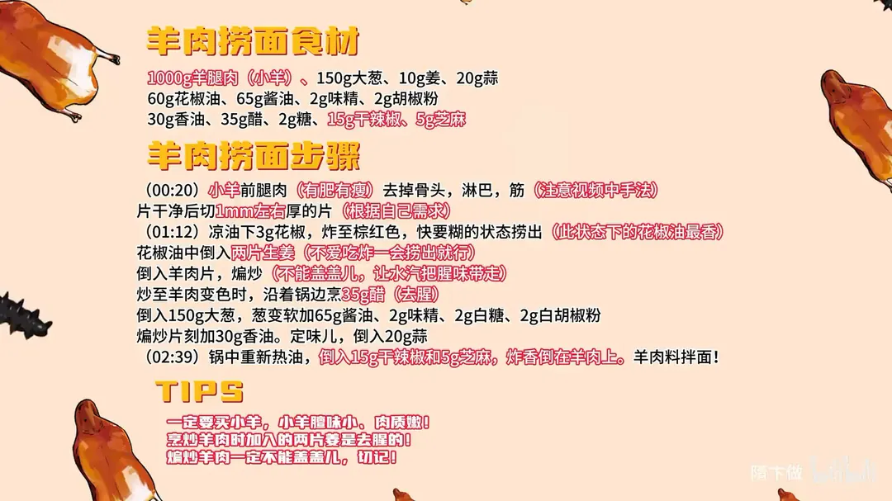

羊肉捞面
隋卞一做。1000g 小羊前腿肉去骨、去淋巴和筋，切 1mm 左右的薄片；凉油下 3g 花椒炸出花椒油，羊肉不盖盖儿干煸去腥，沿锅边烹 35g 醋，再下 150g 大葱和 65g 酱油调味，最后泼 15g 干辣椒、5g 芝麻的热油。
原视频：https://www.bilibili.com/video/BV1Qs421A7qH
食材
羊腿肉、大葱、姜 等 13 样
| 类别 | 用料 | 用量 |
|---|---|---|
| 主料 | 羊前腿肉（小羊） | 1000g |
| 配料 | 大葱 | 150g |
| 配料 | 姜 | 10g |
| 配料 | 蒜 | 20g |
| 配料 | 干辣椒 | 15g |
| 配料 | 芝麻 | 5g |
| 调料 | 花椒油 | 60g |
| 调料 | 酱油 | 65g |
| 调料 | 味精 | 2g |
| 调料 | 胡椒粉 | 2g |
| 调料 | 香油 | 30g |
| 调料 | 醋 | 35g |
| 调料 | 糖 | 2g |
步骤
- 改刀：小羊前腿肉（有肥有瘦）去掉骨头、淋巴和筋，片干净后切成 1mm 左右厚的片，厚薄按自己需求。
- 炼花椒油：锅中放 60g 花椒油，凉油下 3g 花椒，炸至棕红色、快要糊的状态捞出，这个状态的花椒油最香。花椒油里再放两片生姜去腥，不爱吃炸一会儿捞出就行。
- 煸羊肉：倒入羊肉片煸炒，全程不能盖盖儿，让水汽把腥味带走。炒到羊肉变色时，沿着锅边烹入 35g 醋去腥。
- 调味：倒入 150g 大葱，葱变软后加 65g 酱油、2g 味精、2g 白糖、2g 白胡椒粉，煸炒片刻加 30g 香油定味儿，最后倒入 20g 蒜。
- 泼油：锅中重新热油，倒入 15g 干辣椒和 5g 芝麻炸香，连油一起倒在羊肉上，拌面吃。
小贴士
- 一定要买小羊，小羊膻味小、肉质嫩。
- 葱爆羊肉时加的两片姜是专门去腥的。
- 煸炒羊肉一定不能盖盖儿，切记。
讲解要点
难度：★★☆☆☆（新手可做，难点是羊肉切得薄、全程大火不盖盖）
为什么这么做
- 选小羊前腿、去净淋巴和筋：小羊膻味轻、肉质嫩；淋巴和粗筋炒完嚼不动，必须剔干净。
- 切 1mm 左右的薄片：薄片下锅几秒就熟，大火快炒能锁住肉汁，也更容易挂上酱汁拌面。
- 凉油下花椒、炸到棕红就捞：花椒在凉油里慢慢升温才把香味榨出来，炸到快糊的棕红色最香，再炸就发苦。
- 全程不盖盖儿：盖盖会把羊肉出的水汽和腥味捂回肉里，敞着炒让水汽把腥味带走。
- 沿锅边烹醋：锅边温度最高，醋一碰就激出酸香，既去膻又提味，直接倒进肉里只剩酸味。
- 先酱油后盐：酱油本身有咸味，先放酱油再尝咸淡补盐，不会一次放咸。
- 蒜最后下、辣椒油出锅后泼：蒜早放会炒糊发苦；辣椒和芝麻的油最后泼，香气不会被长时间加热挥发掉。
容易翻车
- 羊肉的淋巴、筋没剔净，成品嚼不动还带异味。
- 片得太厚，大火一炒外面老、里面还没熟。
- 炒的时候忍不住盖盖儿，水汽一捂，膻味又回来了。
- 花椒炸过头变黑，整锅油发苦。
- 葱下太早或炒太久，葱香变成蔫葱味。
原片尾卡

原片文案
AI 字幕校准稿
上次教过你们一个炝锅面，全网无差评，给我说得挺膨胀，我都要转白案了。今儿来个羊肉捞面，看看怎么个事。
羊腿肉，这是羊前腿，有肥有瘦；后腿这种也行，反正得有肥的、有点瘦的，纯瘦的口感稍微差一点。然后把骨头、淋巴都去干净，还有大块的筋，切完了炒出来嚼不动。
选完之后直接切片就行。切这种肉类基本上都是直切或者推拉切，最薄的也得有一毫米厚。买羊肉一定要注意，买小羊的。山羊好还是绵羊好，现在品种比较多了，当然你要用苏尼特羊是最好的。
羊肉切好了，准备点葱姜蒜、花椒、面条。面条用便利店买的就好。把锅烧热，里面搁点油，花椒倒进去炸一下，倒进去之后关小火把花椒炸香，炸香了捞出来，这就是花椒油。
然后把姜片倒进去，羊肉倒进去开大火。姜片切得比较大，有些同志可能不爱吃，炒完之后把大片姜挑出来就行了。
全程大火。炒的时候羊肉会产生一些水汽，这个时候千万不能盖盖儿，一盖盖儿，不好的味道就全都捂在里边了。炒得差不多了，放点醋去腥。
把葱倒里边，葱一变软，加酱油，沿着锅边放酱油，再放味精、白糖、白胡椒粉；盐等会儿再放，因为酱油有咸味。最后把蒜倒进去，一盘葱炒羊肉就做好了。
锅里边重新倒干净的油，加干辣椒，里面有芝麻，炸香了浇在羊肉上面。
来吧兄弟。首先说面条不过水，我觉得特别好，它多少带一点点黏糊，能把羊肉的汤汁挂得特别足，吃得好香。最有意思的就是那个炸的辣椒油，他把这个菜唯一可能有点油的部分一下子给它弄没有了，辣椒的香气也好香。
我觉得不输于炝锅面，真的好好吃。这点辣椒是很关键的，还有炝锅那个花椒油也很关键。它吃起来还有葱的口感和甜味，呃，有一点，这就是拌面和葱爆羊肉不一样的地方。来，再来一碗。